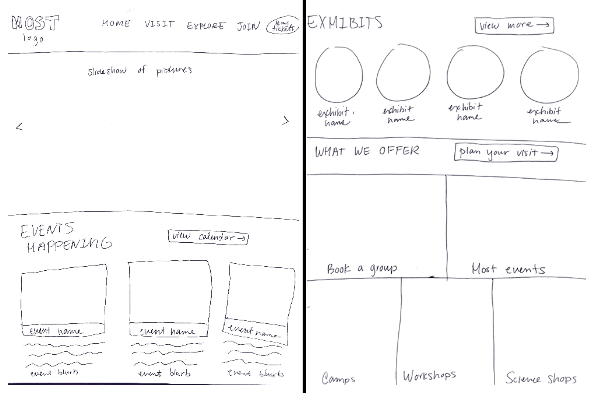

Museum of Science and Technology (MOST)
I re-designed and coded the home page and plan your visit page for the MOST museum in Syracuse, NY. The original website is outdated and does not fully capture the potential of the MOST museum. I wanted to encompass the brand of the museum while emphasizing the events and exhibits that they offered.

This museum is meant to entertain and educate kids. I wanted the front page to have a simplistic design for kids to understand while displaying the most important information for parents to view. For the home page, I thought about why a parent would be going on a museum website in the first place and what information they would want to find. While designing the website, I made sure it was kid-friendly with big pictures, geometric shapes, and colorful accents that complimented the MOST museum logo colors.